Будучи хорошим экшеном, «Игра» вязнет в своей истории, что можно заподозрить, просто обратив внимание на продолжительность фильма — 168 минут. Стремясь побольше рассказать и похлеще закрутить интригу, Олег Трофим (для которого этот «Гром», получается, третий по счёту) и его съёмочная группа перегревают собственный же концепт... Похожим образом работал «Бэтмен» Мэтта Ривза (опять на иностранщину поглядываем). Однако атмосфера, в которой почти три часа геройствовала Летучая Мышь, обволакивала и погружала в выверенный до миллиметра, в чём-то диковинный мир — мир вечной ночи, грязных денег и нуарного цинизма.
Завязка Сюжета
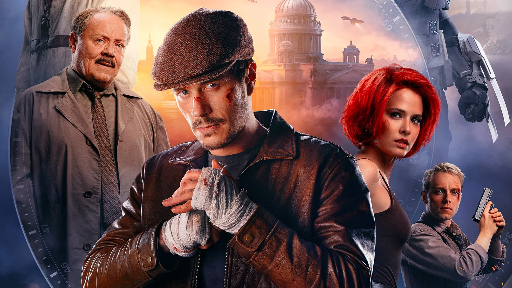
С победы над Чумным доктором прошел год. Сергей Разумовский сидит в психушке,
а Игорь Гром упивается народной любовью. О нем пишут комиксы и снимают фильмы,
во дворах устанавливают памятники.
Впрочем, многим не нравится своеволие Грома. Когда в тюрьме взбунтовались заключенные,
он не стал дожидаться подкрепления и пошел на разборки с напарником Дмитрием Дубиным.
Ребята всех победили, но подвергли жизни заложников опасности.
Поведение Грома и непрофессионализм других полицейских приводит в Петербург Марию Архипову.
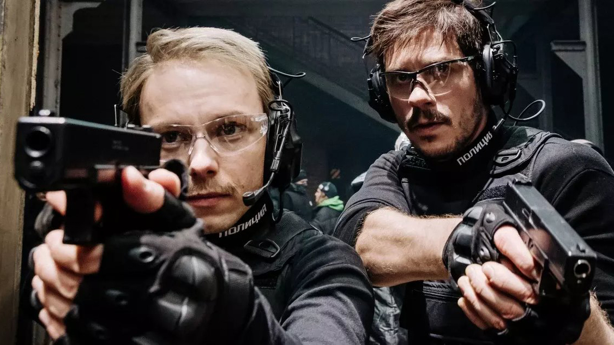
Это генерал-лейтенант из Москвы, которая хочет заменить неэффективных законников дронами.
В ответ генерал-полковник Федор Прокопенко предлагает спор. Если во время испытания полиция
быстрее обезвредит бомбу, ничего не изменится. Если победят дроны, Прокопенко поможет с реформой.
Полицейские участвовали в испытании после пьянки, но все равно быстро справились. Вот только дрон
легко их превзошел. За процессом следил иностранный оружейный барон Август ван дер Хольт. Когда-то
его отец продал костюм Чумному доктору, а теперь Август хочет поставлять дроны в Петербург.
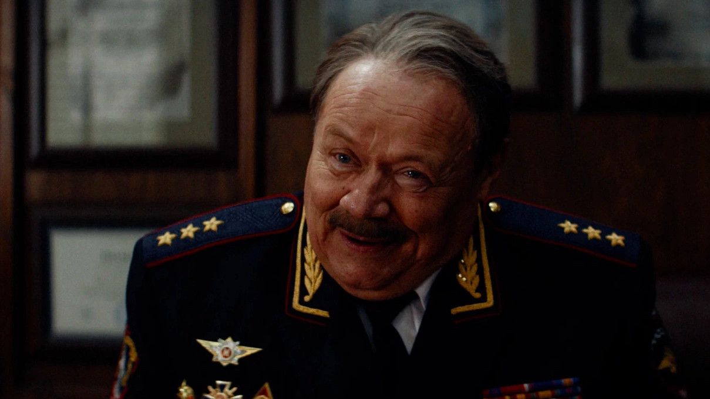
Игорь Гром и его возлюбленная Юлия Пчелкина идут в ресторан и обмениваются презентами.
Идиллию рушит игрушечная машинка, которая подъезжает к столику и взрывается.
Лишь чудом никто не пострадал. Майор замечает на соседней крыше человека в странном
костюме и начинает погоню. В итоге персонажи сходятся в драке, и Гром проигрывает после
удушающего приема.Герой приходит в себя от звонка того самого подрывника Призрака.
Психопат предлагает сделку: Гром оставляет должность или в городе произойдут теракты.
Первый случится на Дворцовой площади, там взорвется объект из семи букв. Гром думает,
что речь про Эрмитаж, но на деле взрывается колонна...
Актёры и команда
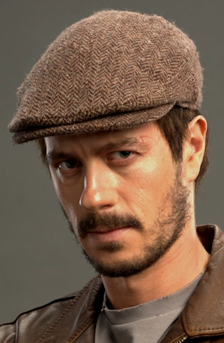
Тихон Жизневский
Игорь Гром
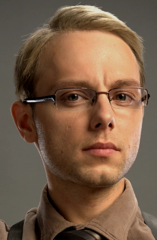
Александр Сетейкин
Дмитрий Дубин
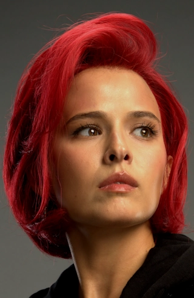
Любовь Аксёнова
Юлия Пчёлкина
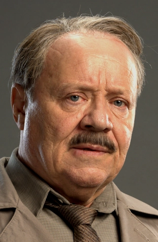
Алексей Маклаков
Фёдор Прокопенко
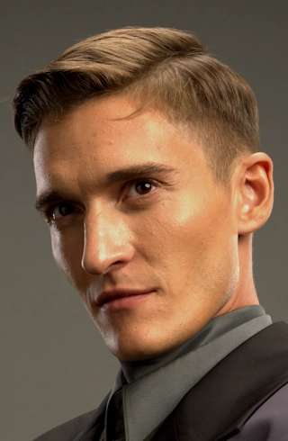
Матвей Лыков
Август ван дер Хольт
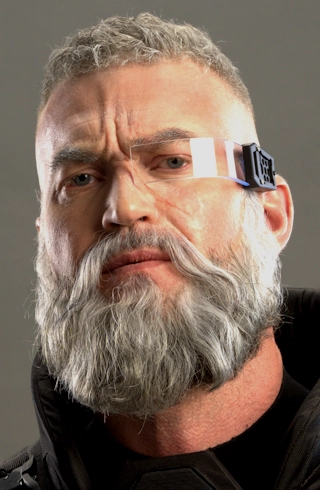
Андрей Трушин
Отто Шрайбер
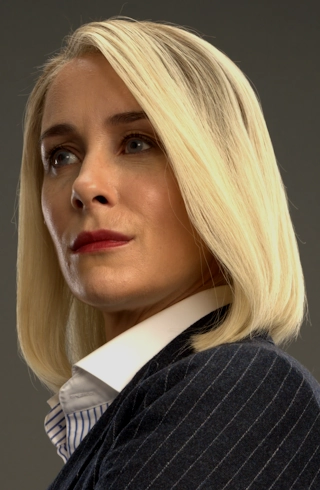
Ольга Сутулова
Мария Архипова
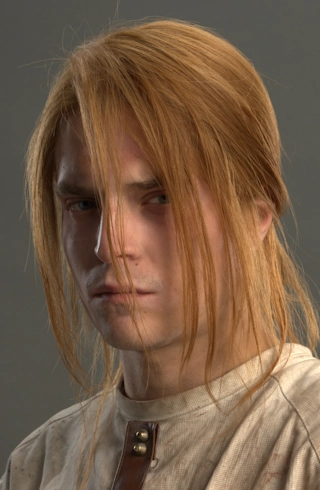
Сергей Горошко
Сергей Разумовский
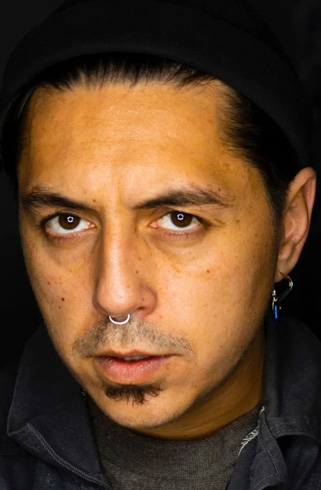
Олег Трофим
Режиссер
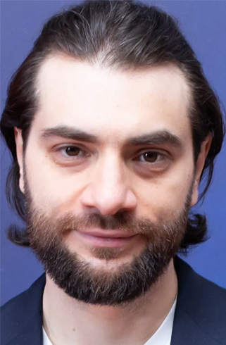
Артем Габрелянов
Продюсер / Сценарист
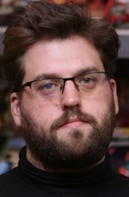
Роман Котков
Сценарист
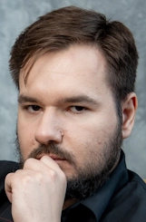
Евгений Еронин
Сценарист
Николай Шишкин
Сценарист
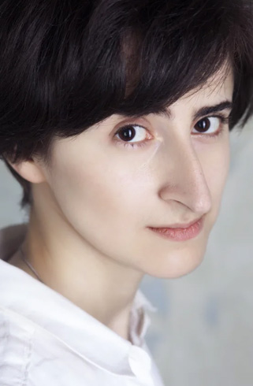
Екатерина Краснер
Сценарист
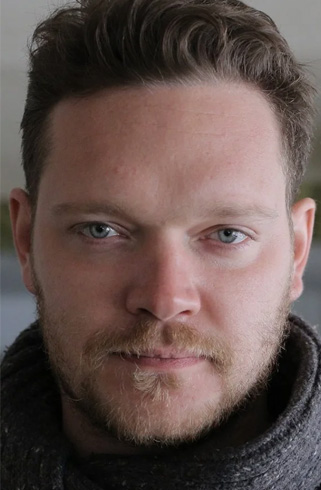
Михаил китаев
Продюссер
Ольга Филипук
Продюссер
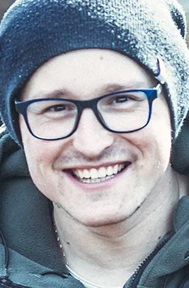
Максим Жуков
Оператор
Приквелы и комиксы
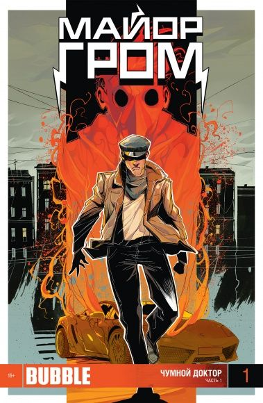
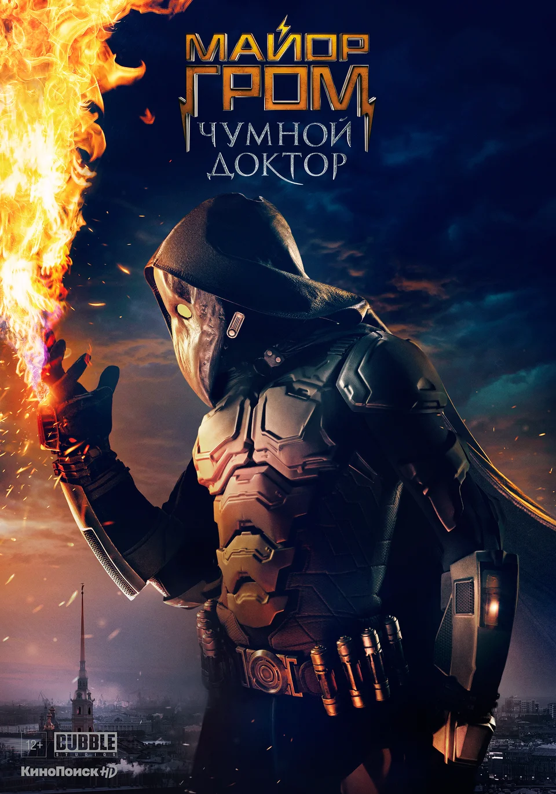
«Майор Гром: Игра» — продолжение кинофраншизы, основанной на комиксах Bubble. Серия стартовала в 2017 году с короткометражки Владимира Беседина «Майор Гром», где главную роль сыграл Александр Горбатов. В 2021 вышла первая полнометражная картина с подзаголовком «Чумной Доктор».
В «Чумном Докторе» герой противостоит богачу Сергею Разумовскому. Злодей решил навести порядок в стране и уничтожает тех, кто вредит людям. При этом сам Разумовский страдает раздвоением личности и считает, что все убийства совершает его телохранитель и друг Олег Волков.
В приквеле «Гром: Трудное детство» рассказывают о юности героя — здесь его играет Кай Гетц. Игорь живет с отцом, и пока Гром-старший расследует деятельность бандита по прозвищу Анубис,сын пытается достать деньги на поездку в «Диснейленд». В поисках заработка Игорь тоже оказывается втянут в расследование, а в итоге становится косвенной причиной гибели отца.
Отзывы
КГ-Портал
2 июня 2024 года
50
Стерильно
Мир фантастики
23 мая 2024 года
Сиквел уверенней оригинала стоит на ногах. Он получился смотрибельным, бодрым и красивым, пусть его и немного портит вторичность и перегруженность линиями. Но в конце концов, если равняться, то на лучших.
80
Хорошо
Афиша
17 мая 2024 года
Это боевик категории «Б», который как будто стесняется собственной «бэшности» и очень хочет быть проектом класса А. Отсюда раздутый хронометраж и попытка поговорить на серьезные темы.
60
3 из 5